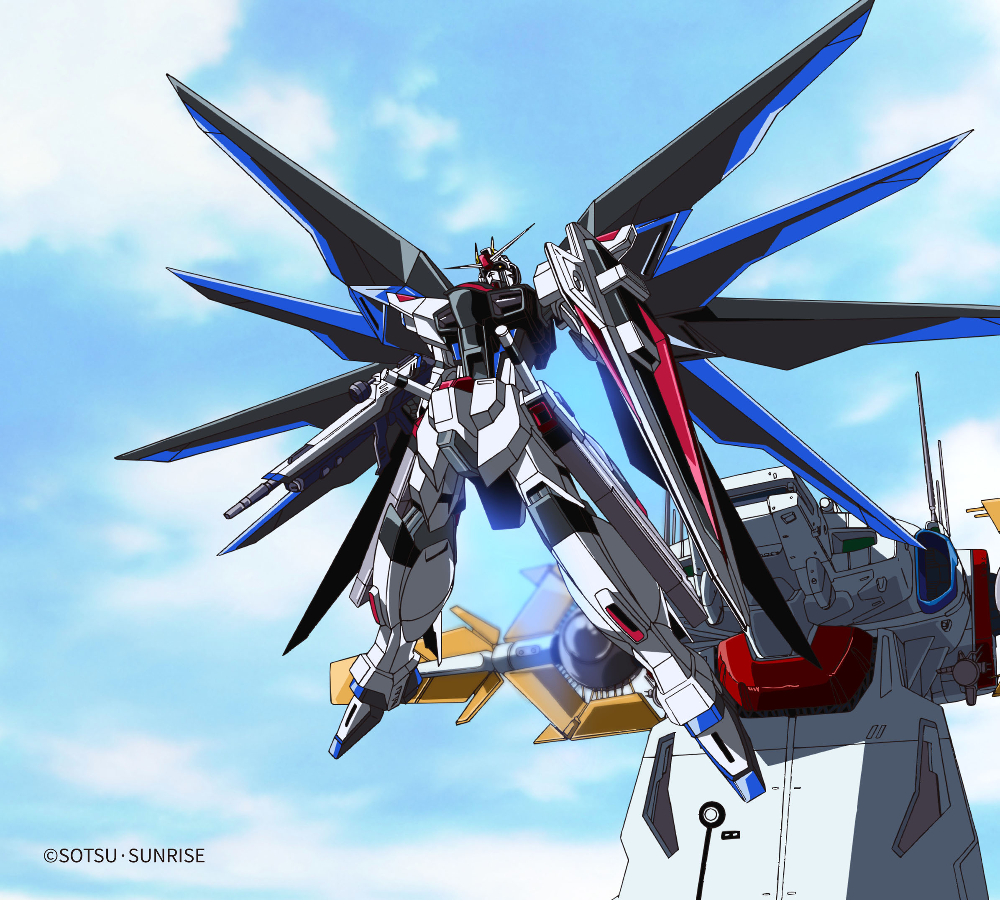
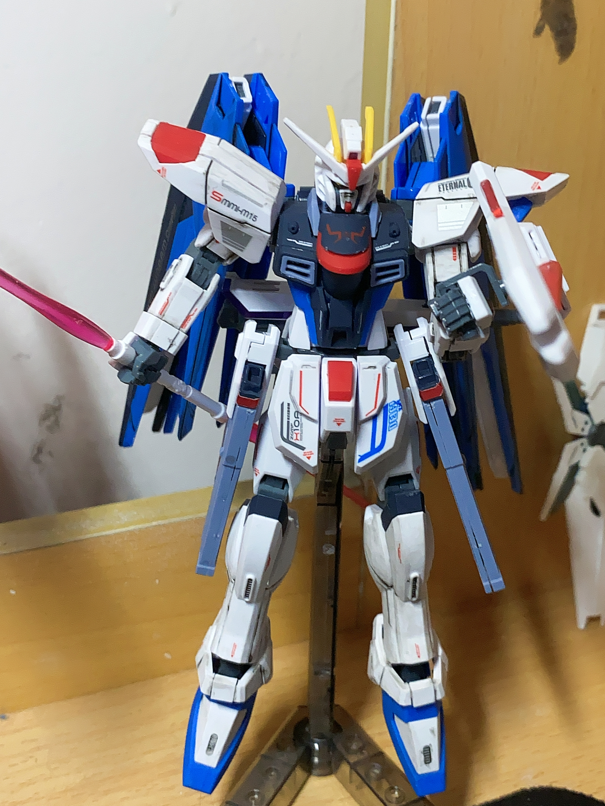

机动战士出击：高达

自由高达
万代HGCE系列，1/144比例，耗时3天完成，进行了渗线和贴纸美化。

瞬变高达
万代HG系列，1/144比例，耗时1天完成，重点修饰了武器细节。

完美独角兽高达
万代HG系列，1/144比例，耗时2天完成，带有可变形结构和LED灯组。
自由高达


自由高达（Freedom Gundam）是《机动战士高达SEED》的核心主角机体，由主人公基拉·大和所驾驶。该机采用核动力驱动系统，搭载了两门光束步枪、磁轨炮及光束军刀等多种先进武装，具备全方位作战能力。
本件藏品为万代HGCE系列Freedom 1/144比例模型。整体造型遵循原作设定，线条流畅且配色鲜明。通过渗线工艺强化了机械细节的立体感，并辅以精密水贴点缀，显著提升了整体质感。模型关节设计合理，可动性出色，能够还原多种经典战斗姿态。
制作周期：2025年6月，历时1天精心打造。